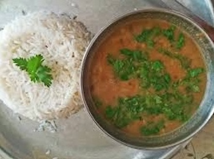

Nepali Dal Bhat

What is Nepali Dal Bhat?
Dal Bhat is a traditional meal from the Indian subcontinent. Nepal is the disputed inventor of Dal Bhat and is it's national dish. 'Dal' means lentil soup, and 'Bhat' means steamed rice. But don't let that deter you or believe it is boring. It is packed full of flavour and will leave you satisfied!
Ingredients
- 2 Tablespoons ghee or oil
- 1 onion chopped finely
- 3 cloves of garlic chopped finely
- 1 cup red lentils washed
- 3 cups of water
- 1 teaspoon of ginger
- 1 teaspoon of red chili powder
- 1 teaspoon of turmeric
- 1 teaspoon of cumin
- 1 teaspoon of crushed coriander
- 1 teaspoon of salt
- 1 teaspoon of pepper
- 2 cups cooked rice to serve with dal
Steps
- Heat the ghee or oil in a large frying pan and cook the onions until translucent but not brown.
- Turn the heat to low and add in the garlic, ginger, cumin, crushed coriander seeds, red chili powder, pepper and turmeric. Stir to combine for about 3 minutes or so.
- Add in the red lentils and mix well with the onion mixture.
- Add in the water and bring it to a boil add in the salt and reduce heat to a simmer for about 15 minutes or until the
lentils are tender. Then remove from heat.
- Serve with the rice of your choice.
- Enjoy! :)